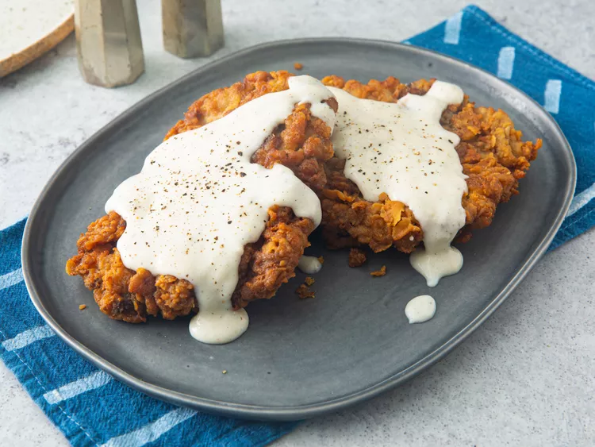

Carne Asada Tacos

Description
This chicken fried steak recipe is one I received from a co-worker about 5 years ago. A Southern favorite, these crispy, breaded, tenderized cube steaks drenched in creamy gravy can be served for breakfast or dinner. It's by far the best chicken fried steak I've ever had. I've made this numerous times for my picky son and my Southern-raised better half, as well as for other family and friends and each time, I get nothing but rave reviews.
Looking for the best chicken-fried steak of all time? Well, your search ends here! This top-rated recipe results in a tender, juicy steak with an irresistibly crispy coating. Learn how to make the greatest chicken-fried steak of your life — and get smart storage and serving tips.ste
Ingredients
- 4 (1/2 Lb) Beef Cube Steaks
- 2-1/4 Cups All-Purpose Flour, Divided
- 2 Tsp Baking Powder
- 1 Tsp Baking Soda
- 1 Tsp Black Pepper
- 3/4 Tsp Salt
- 1-1/2 Cups Buttermilk
- 1 Tbsp Hot Pepper Sauce
- 1 Large Egg
- 2 Cloves Garlic, Minced
- 3 Cups Vegetable Shortening for Frying
- 4 Cups Milk
- Kosher Salt & Ground Black Pepper to Taste
Steps
- Place steaks between 2 layers of plastic and pound to a thickness of 1/4 inch
- Place 2 cups flour in a shallow bowl
- Stir together baking powder, baking soda 1 teaspoon pepper, and 3/4 teaspoon salt in second shallow bowl. Add buttermilk, Tabasco sauce, egg, and garlic; stir to combine
- Heat shortening in a deep cast-iron skillet to 325 degrees F (165 degrees C). Place a wire rack over a sheet of parchment paper
- While the shortening is heating, dredge a steak in flour to coat; shake off excess. Dip into buttermilk batter; lift up so excess batter drips back into the bowl. Press in flour again to coat both sides completely. Place breaded steak on the wire rack and repeat to bread remaining steaks
- Fry steaks, in batches if necessary, until evenly golden brown, 3 to 5 minutes per side. Remove steaks to a paper towel-lined plate to drain. Cover with foil to keep warm while you make the gravy
- Drain fat from the skillet, reserving 1/4 cup of the liquid and as much of the solid remnants as possible
- Return the skillet to medium-low heat; add the reserved oil. Whisk the remaining 1/4 cup flour into the oil. Scrape the bottom of the pan with a spatula to release solids into the gravy
- Stir in milk, increase the heat to medium, and bring the gravy to a simmer. Cook, stirring often, until thick, 6 to 7 minutes. Season with kosher salt and pepper
- Transfer steaks to a platter and pour gravy over top
Recipe referenced from here